Federer Serve Locations:1st Serve Ad Court¶
John Yandell¶
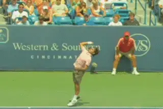
How does Roger Federer create accurate placements to either ad corner?
In the last article we looked at the complex factors in the upward swing of the serve of Roger Federer. (link.) The next logical question to ask is how does Federer (or any other top player) vary these factors to control the direction of the shot?
We know that the difference between serving to the opposite corners of either service box is a matter of just a few degrees in the angle and/or path of the racket head. And, as we'll see, theses differences at contact are very difficult to see--if not imperceptible--even in high speed video.
But I believe the video can show certain differences in the upward swing and how the motion varies when Federer hits wide or down the T. In this article, let's start by taking a look at his first serve in the ad court. Then in subsequent articles we'll look at the deuce court, and then at the second serve placements in both courts.
5 Factors
Let's start by reviewing the 5 factors in the upward swing from the first article. That requires acknowledging the pioneering work of Brian Gordon in identifying these factors so clearly with his revolutionary 3D measurement technology. (To check out Brian's series on the serve based on this research, link.)
| The 5 Factors in the Upward Swing: |
|---|
| Shoulder Abduction |
| Elbow Extension |
| Internal Shoulder Rotation |
| Ulnar Deviation |
| Wrist Flexion |
In the past, I've tried to stay away from technical biomechanical terms, favoring plainer language. But, as we have come to understand more and more about the complexity of the stroke movements, I think these terms become increasingly helpful or maybe even necessary - if for no other reason to try to get more people on the same page in describing what we actually see. So let's start by reviewing what these factors are.
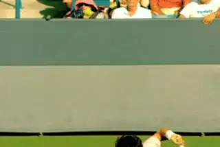
Which factors in the upward swing change to generate location?
Shoulder Abduction: Hold your arm out to your side. Now raise it from the shoulder. That's shoulder abduction. You can see it in the serve by watching the level of the elbow in the upward swing.
Elbow Extension: This one is pretty clear. Elbow Extension is the straightening of the elbow from the bent position at the racket drop to full extension at contact.
[Internal Shoulder Rotation: This is the forward rotation of the upper arm in the shoulder joint. It turns out this factor is probably the key in understanding location.]
Ulnar Deviation: Hold your arm out in front of you with the palm in line with your forearm. Now flex your wrist to the right. Even with high speed video, this a difficult element to see.
Wrist Flexion: At the bottom of the racket drop, the wrist is laid back. As the motion moves upward toward the contact, the wrist moves from laid back to a neutral position in line with the forearm. That's wrist flexion.
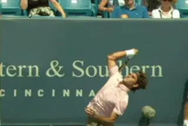
Watch the internal, forward rotation of the upper arm drive the motion.
Which One?
So those are the factors. The question is: what changes in which factor (or factors) result in the differences in location? I think I'll concede final determination on that question to Brian, maybe after he actually measures Federer.
This is because even in the high speed video the differences on the wide versus the T serves are very slight. But one factor we can see clearly enough to say that it is different as location changes.
[This is the internal rotation of the upper arm.] We can see this effect of the changes in internal rotation in the way the racket, hand and arm move on the way to contact and then in the followthrough. Basically it's a difference in how much and when the racket turns over.
Notice that I didn't say in how much the racket "pronates." And that term isn't included in the five factors either. But isn't "pronation" what happens when the racket turns over? Technically, no. Let's try to clarify why that is - and what that term means to different people in tennis.
When most teaching pros and players think of "pronation" they think of the racket rotating counterclockwise over in the course of the upward swing and followthrough. So after contact, when the top edge of the racket turns down toward the court surface, it is commonly said to "pronate."
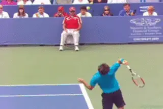
The common understanding of pronation refers to the way the racket head turns over, especially in the followthrough.
[But if we look at pronation in the technical biomechanical sense, it actually refers to something more limited, which is simply the rotation of the forearm at the elbow joint. Hold your arm straight out in front of you. Now stabilize the upper arm with your other hand. Rotate your hand and forearm left and right. Technically, that's pronation.]
Now, I don't think it's a problem to use the term in the way it's more widely understood, especially because that has become part of the tennis lexicon. It's just important to understand what is being meant when.
What Brian's work shows - and this is backed up by the video - is that pronation in the technical biomechanical sense isn't a factor in serve location. In fact, Brian has detected little to no independent rotation of the forearm in high level serving. (I'll leave it to him to explain the complexities of that at a later date.) So for the purposes of this article, let's look at the differences in serve location in the technical biomechanical terms.
As I said, there may be other factors that come into play in location, but what the video shows is the clear role of the rotation of the upper arm. This role has two parts: how much it rotates, and when that rotation starts.
So what does this mean? [To hit a first serve wide in the ad court, Federer rotates his upper arm sooner before the hit and also rotates it further in the followthrough.. Serving down the T, the rotation appears to start slightly later and to be less extreme after contact.]
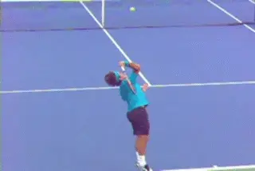
On the wide serve, notice how the racket turns over and the angle of the racket head to the court.
Ad Court Wide
So let's examine what actually happens when Federer goes wide in the ad court. Watch the first animation of the wide serve that shows the total rotation of the hand, arm and racket.
The elbow is extending, but the racket and hitting arm structure are rotating counterclockwise as a unit from the shoulder. This is driven by the upper arm. Watch again and focus in the upper arm.
It also seems apparent that there isn't independent rotation of forearm (technical biomechanical pronation.) The racket and the forearm are along for the ride as the internal shoulder rotation drives the motion.
At the start, as the racket starts upward, the plane of the racket face is basically perpendicular to the plane of the torso. Then, by the last frame of the animation, the racket head appears to rotated something like 180 degrees or maybe a little more, until it is just past perpendicular to the court surface.
Down the T
Now watch when the serve down the T. The same basic dynamic applies. There is substantial internal or forward rotation of the upper arm, and again the racket seems to turn over edge to edge.
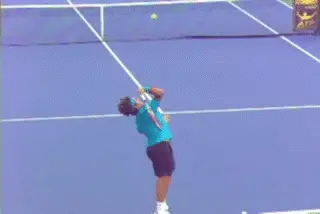
Watch that on the T serve the total rotation, while substantial, is slightly less than on the wide placement.
Again everything is driven by the upper arm and rotating as a unit. It's just that the total rotation is slightly less extreme.
The racket face still rotates substantially counterclockwise, it's just that the rotation stops when the racket appears to be on edge or perpendicular to the court surface.
The difference in the amount of rotation may be minimal, but it appears to account for the location differences in the serve. Think about it - the service box is 13 1/2 feet wide. But this slight variance is enough to send the ball to locations 10 feet apart or more.
Contact?
As for the contact point itself, even in the high definition video, it's hard to say what the difference in the angle really is. Perhaps the racket face is turned more toward the outside on the wide serve, but I am just not sure I can see it in the video. That's ok though because it gives us something to look forward to in the results when we do get some quantitative measurements.
A Closer Look
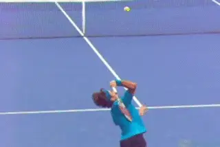
Wide Serve: Look at the angle of the racket face micro seconds before and after contact.
Now let's take a closer look at what happens prior to contact and see how that relates to the differences in the followthrough we just noted. Again the differences are very small.
Let's start again with the wide serve. If you look at the first freeze in the motion after the racket starts up from the drop, the racket face appears to be at about 60 degrees or so to the court surface. This is about 2/100's of a second before contact.
At the next freeze, about 1/100th of a second later, the face appears to have rotated another 30 degrees or so. I'm making these angles up, but the tip of the racket has clearly turned further and is also well to the left of the ball.
Now watch the rotation continue after the contact. At the next freeze, about 2/100's of a second after contact, the racket face has rotated maybe another 45 degrees.
A few fractions later it reaches the vertical position, with the face on edge to the court. Then it continues a little further as we saw in the first wide serve animation, going just past perpendicular.
Down the T
Now compare that to the T serve. At the first freeze after the racket drop, the face of the racket has definitely turned, but it appears to be a fraction less than in the animation of the wide serve.
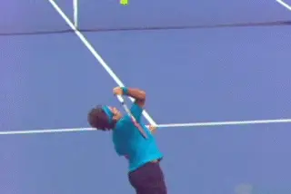
T Serve: Watch how the arm turns less before contact and then after.
The next freeze shows more of a difference. The face is at about a 45 degree angle to the court, and the racket tip is much less to the left of the ball. Definitely, there is less rotation of the upper arm as the racket moves to the contact.
The same pattern continues in the followthrough. The next freeze is, again, about 1/100 of a second after contact. The face has turned 30 degrees or less.
At the next freeze the angle is maybe 45 degrees. This is at the same point in the swing when the wide serve is already on edge. Then in the final freeze the racket has reach perpendicular to the court on the T serve, compared to slightly past on the wide placement.
The amazing thing is that in super high speed video - with more than 8 times the information of regular video footage, the differences still appear so small.
[So if you've wondered why it's so hard to hit the corners, you can stop blaming yourself. It's tough! It requires extremely precise racket control.]
This analysis should make us all respect Federer or any of the other super accurate servers in the history of the game. But if we at least have clear images of the differences, we have a place to start in modeling our own motions.
So let's take a look at the difference one more time, and this time, let's compare still images of the key moments. In some ways this makes the differences easier to see.
Let's look first at the motion from the racket drop up to contact, with still images of the same freeze frames we talked about in the animations above.
Ad Court First Serve Wide: Racket Drop to Contact
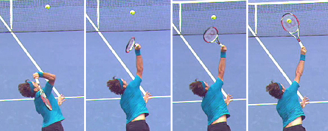
Ad Court First Serve T: Racket Drop to Contact
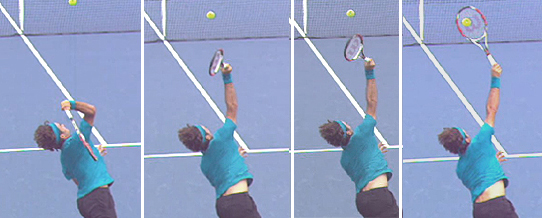
Compare the angle and the timing of the racket face rotation from the drop to the contact on the wide serve (top sequence) to the T serve (bottom sequence).We can see all the same things here we saw in the animations. The still images though I think let us see one thing more clearly: the actual position of the upper arm.
As the racket moves from the drop to the contact we can see that the entire arm structure has rotated further in the wide serve. Look closely at the angle of the elbow and you'll see what I mean.
Ad Court First Serve Wide: Contact to Finish
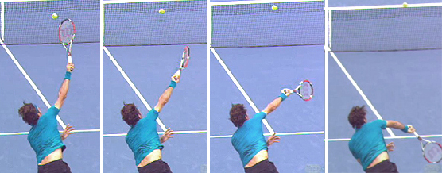
Ad Court First Serve T: Contact to Finish
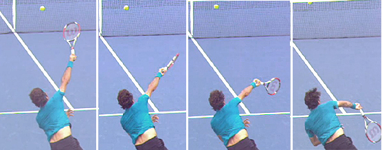
Now compare the angle and the timing of the racket face rotation from the contact out into the followthrough. Notice in the last frame that the changes are very difficult to detect nearer the end of the followthrough.The stills are just as helpful in seeing the actual arm rotation after contact as before. And again by focusing on the elbow you can see the differences in the amount the entire hitting arm structure has turned.
It's worth noting one more time that it takes super high speed video to even see these differences. And notice the last frame. See how as the followthrough nears completion the position of the arm and racket are now virtually identical. So when the racket is slowing down and the human eye actually has a better chance to see what is happening, the differences disappear!
The fact is these rotations (and the slight differences between them) all occurred in a duration of a little more than a 1/10th of a second. No wonder these issues have puzzled so many players and coaches for so long.
So that's good! Very good. But I still have questions. We can see the internal arm rotation differences. But what about any differences we can't see? For example I found myself wondering if the path of the hand wasn't more out to the right on the wide serve.
If so is that a function of the rotation itself, or possibly a change in the angle of the elbow as the arm straightens out and extends? Is the ulnar deviation, or the flex of the wrist to the right, identical in the two motions? I don't know but would like to.
These are things we hope to address through Brian's quantitative data at a later date. But for now let's stick with what we can see and go on and look at the same issue in the deuce court in the next article. What are the differences when Roger serves wide and down the T? Stay Tuned!

John Yandell is widely acknowledged as one of the leading videographers and students of the modern game of professional tennis. His high speed filming for Advanced Tennis and TPA have provided new visual resources that have changed the way the game is studied and understood by both players and coaches. He has done personal video analysis for hundreds of high level competitive players, including Justine Henin-Hardenne, Taylor Dent and John McEnroe, among others.
In addition to his role as Editor of TPA he is the author of the critically acclaimed book Visual Tennis. The John Yandell Tennis School is located in San Francisco, California.
← The Upward Swing | Advanced Tennis Index | 1st Serve, Deuce Court →